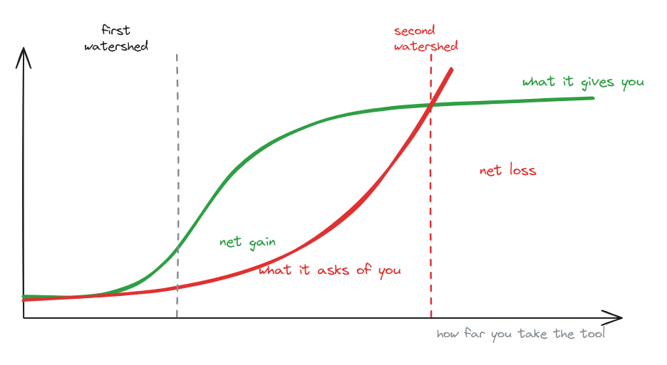
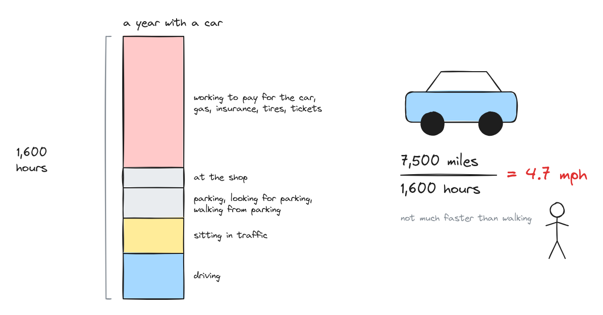
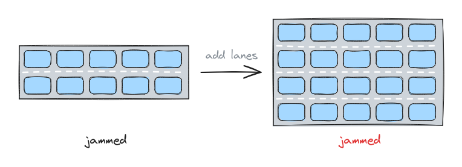
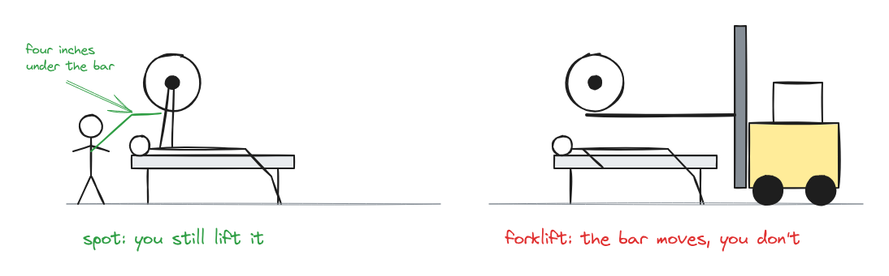
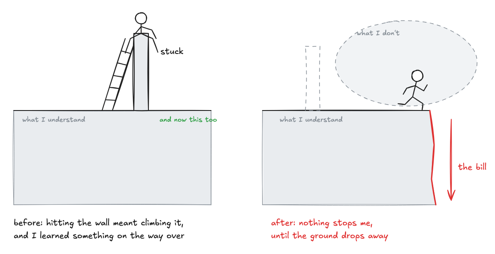
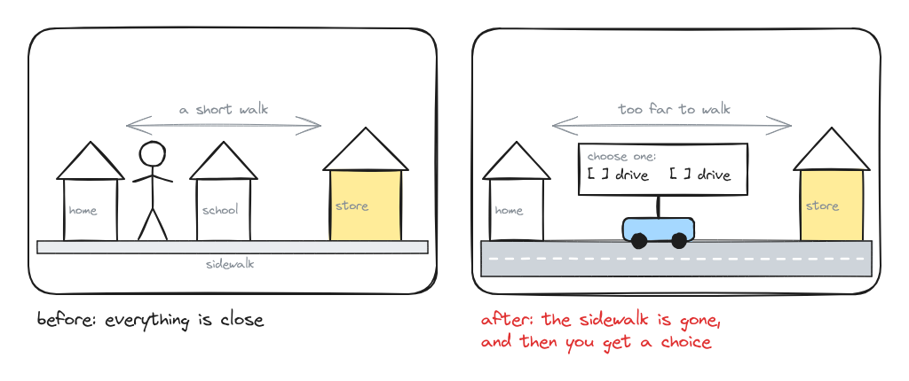
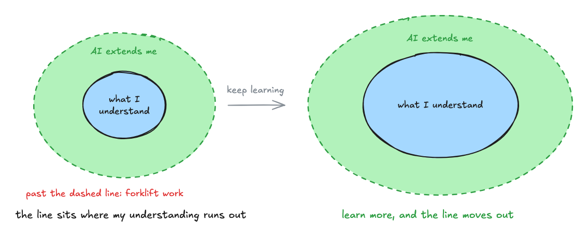

Over the last year, the way I do my job has radically changed. A request for a dashboard used to mean 2-4 weeks in Tableau. Now it takes two to four hours.
Instead of scouring my code for bugs, I wait for one of my many agents to report back on its project. It feels like I was silently promoted to manager, except the team is made up entirely of robots. We don’t have weekly check-ins, we have them every thirty minutes. The pace keeps accelerating, the scale keeps growing, and I genuinely have no idea what this looks like in 2 years.
In times like these, when things feel overly complicated, I look for a framework, something that simplifies reality into something understandable. The one I’ve latched onto comes from an Austrian priest and philosopher, Ivan Illich.
The two watersheds
In 1973 Ivan Illich published Tools for Conviviality, and in it he describes two watershed moments in the life of a new technology.
The first watershed is the point where life with the tool is better than life without it. Email let people send a message instantly instead of waiting days for a letter. Facebook allowed us to reconnect with long lost friends.
The second watershed is the point where the tool’s costs start to exceed its value. Now people spend hours sorting email, much of it from someone sitting in the same office. Social media now steals our time and our sanity.

My favorite example of Illich’s is the car. His goal is to measure the speed of the car. Simple, right? It’s just Distance/Time. Except he added in all the hidden time (time at work paying for the car, time sitting in traffic, time searching for a parking spot, etc.) and divided the miles driven by his time total. He estimated the typical American’s car was actually moving them less than five miles an hour. This incredible feat of engineering that can reach speeds exceeding 100mph, when you did that math, was not much faster than just walking.

The second watershed of AI
I’ve started to see what AI’s second watershed looks like for me, and similar to Illich’s car, it’s not always obvious at first glance.For me, it shows up in three ways: I stop asking the right question, I stop understanding the answer, and I end up owning too much.
The right question
One of the most important parts of a data analyst’s job isn’t pulling the data. It’s helping people ask a better question. Every project I take on starts with a conversation about the underlying problem someone is trying to solve, and most of the time their first question only hits part of it. AI doesn’t tell you your question is bad. It just answers it. The more I lean on it for analysis, the more I skip exploring the data and the context around the question which hurts the over quality of my analysis.
Level of understanding
AI will suggest a fix for any problem I run into. Troubleshooting used to be miserable. Chasing a bug, or figuring out why the numbers didn’t add up, could take hours or days. But I came out the other side with a deep understand of both the data and the problem. Now I click whatever option says “(recommended)”, sometime without really knowing what it means.
Surface area
This one has been building for months. As I’ve gotten faster, I’ve built more, and everything I build turns into something people rely on, ask about and want extended. So the requests keep coming, from more people, about more things. Economists call this Jevons paradox. When technology makes a resource cheaper to use, we use more of it. Add lanes to a highway and in a few years the traffic is back. My output is the highway. Sooner or later you have to ask how many projects one person can actually maintain.

Living between the watersheds
So what does it look like to live between the two watersheds? I know I can’t go back to not using AI. But I need some personal rules for staying in balance, and right now I have less a clear answer than a gut feeling.
The rule I keep coming back to is to use AI only as far as I understand what it’s doing. I’m comfortable having it write SQL, because I can read the queries. If it’s doing something I could already do, just faster, that’s solid first watershed territory. When it builds something I can’t evaluate and have no practical way to understand, I’ve crossed into the second. That line isn’t fixed, though. It sits wherever my understanding ends.
Illich called a tool that stays on the right side of that line convivial. A convivial tool works with you and stretches what you can do without replacing you. I think about it like a spotter on the bench press. My neighbor Frank spots me on bench press. When he’s there, I can attempt a weight that I couldn’t alone. Some days he really helps get the bar off my chest; other days it’s just a tap. A forklift could get the bar off my chest too. Frank works with me. The forklift works for me. I get stronger when Frank is there, not the forklift.

If I’m being very honest, a lot of my recent projects have been forklift projects.
Figure it out
In college I worked at the IT help desk, where I got the best advice of my life. Whenever I got stuck and asked my manager for help, he gave me one of two answers: “Figure it out,” or “Try harder.”
I have built my entire career on that advice. I put myself in positions I’m under-qualified for, then learn the skill faster than anyone expects. I got stuck getting data out of the database, so I learned SQL. I got stuck analyzing it, so I learned Python. Before I knew it, I was running analytics for the CEO at 23.
My value proposition was an arbitrage on how long a hard skill takes to learn and how long a motivated person takes to learn it. That gap was my edge, and it looks like it’s closing. Now I pay $20 a month to never be stuck, and so can everyone else.
At first that felt terrifying. If no one is ever stuck, where’s my differentiator?
But I’m starting to think never being stuck is a bit of an illusion. AI always has an answer, so you never hit the wall. The wall was useful, though. Being stuck was the signal that I’d reached the edge of what I understood. Without it, I can wander a long way into territory I don’t understand before I notice.
The bill always come due, now it just comes with a delay. It shows up as a bug I can’t diagnose, a number I can’t defend in a meeting, a system nobody can maintain, me included. It’s Illich’s car again. It feels fast, but when you factor in the true cost, return on investment isn’t quite what you initially thought. Past a certain point, never being stuck costs more than it gives. That’s the second watershed.

So the gap is still there, it’s just somewhere else. Anyone can get unstuck in minutes. Knowing when you’re actually stuck and being willing to learn is the new value.
The radical monopoly
Some people are resistant to using the new technology altogether, which do genuinely have sympathy for. But Illich has another concept that I think will soon eliminate this as a possibility. He called it the radical monopoly. Once a technology is used widely enough, you no longer get to choose whether to use it. Try being the no-email guy at work and see how long you last. Try finding a job close enough to walk to. When society adopts a tool, everyone pays its price, whether it’s worth it to them or not.

In my role, expectations haven’t caught up with what the technology can do. People still mostly think in timelines of weeks. I know timelines of days are coming, because they’re already possible. When they arrive, the expected size, scope and volume of our work will grow tenfold, and choosing the spotter over the forklift may stop being a choice I get to make.
The new arbitrage
The old arbitrage was how fast a motivated person could learn a hard skill. The new one is how deep your understanding goes. AI is only as useful as the judgment of the person directing it, and judgment comes from understanding: how data is shaped, how systems fail, why one architecture holds up and another doesn’t. That tends to cost more than a $20/mo chatGPT subscription, it costs time and effort.
Which means my rule from earlier isn’t only a limit. If I should only use AI up to the point where I understand what it’s doing, then the way to get more out of it is to understand more. Every concept I really learn moves the line. Things that were forklift work become spotter work, and the tool extends me further than it could before.

The radical monopoly means everyone will have the same tools and the same expectations of speed. What they won’t all have is the understanding underneath. That’s where the edge is now. Keep learning how things work, and let AI make me faster on top of it.
I think my old manager’s advice still holds. I just have to aim it somewhere new. Figure out how it works. Try harder to understand it. Then let the AI spot me.